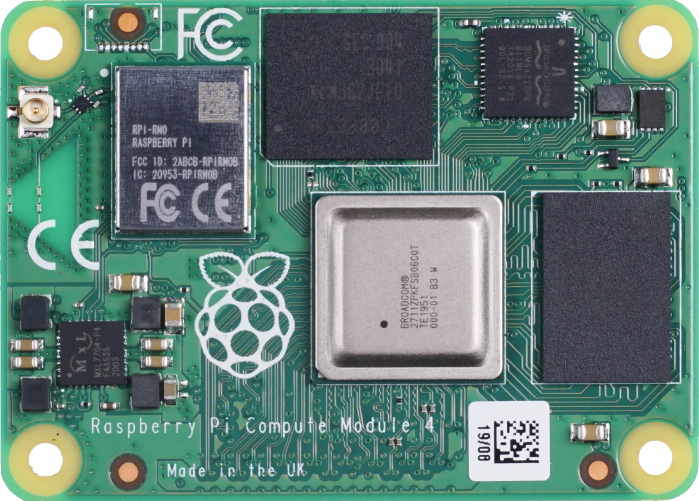
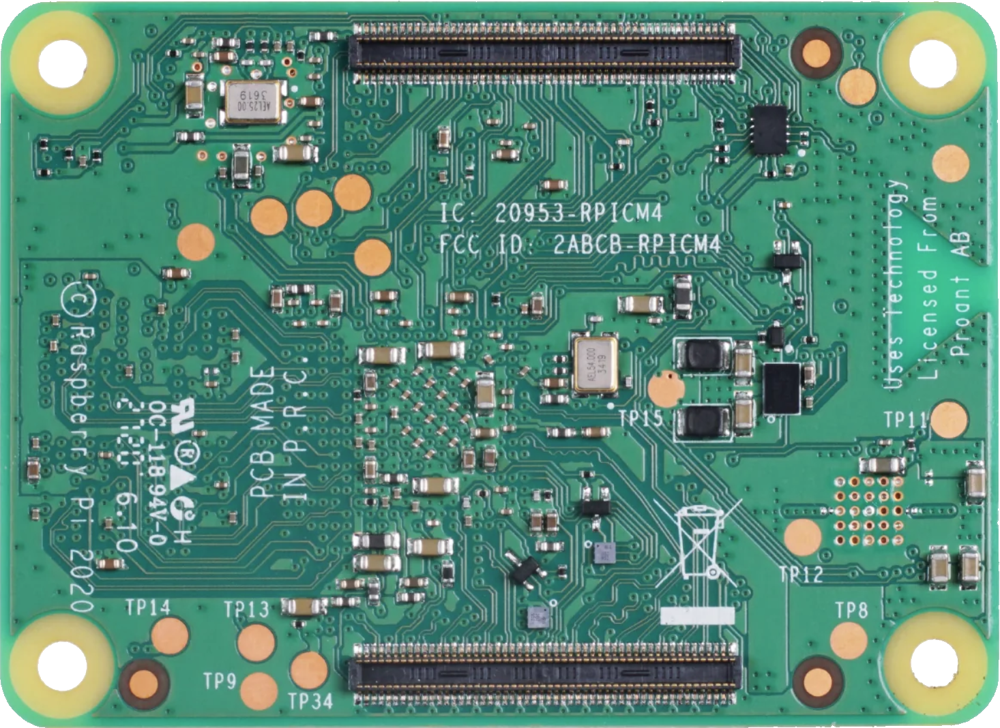

Front / top side

Back / bottom side, X mirrored

Click or hover a point
Side—
Reference—
Name—
Group—
Approx. X / Y—
Displayed X—
Coordinates are approximated from the CM4 photographs. Back/bottom X is mirrored as 55 − X.
Legend
The CM4 datasheet does not publish a test-point coordinate table. Only references visible on the bottom-side silkscreen are marked; signal assignments are intentionally not inferred.